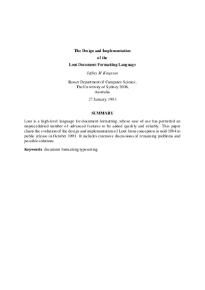
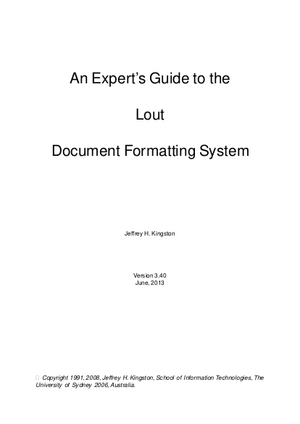
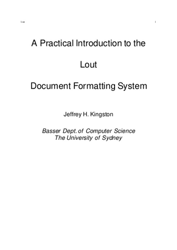
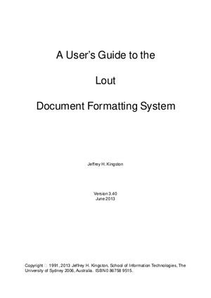

End-to-end renders of the four documents that ship with the Lout source tree, built via both the legacy PostScript pipeline and the new SVG back-end (z53.c). Each HTML page is a standalone Lout document; click a thumbnail or row for the full render.

design
expert
slides
user| Page 1 | Document | Pages | HTML | SVG | SSIM | Diff % | Links | |
|---|---|---|---|---|---|---|---|---|
| design Jeffrey Kingston's 1993 design paper on Lout's galley system. Heavy on @Eq, @Fig, worked examples. | 40 | 2.3 MiB | 173.5 KiB | 2.3 MiB | 0.9123 | 9.16% | HTMLPDFdiff galleryLout source | |
| expert The Expert's Guide (@Book style). Advanced features: @Span, @TagItem, custom galleys, @Insert, rotated graphics. | 115 | 5.9 MiB | 467.2 KiB | 5.9 MiB | 0.7061 | 11.11% | HTMLPDFdiff galleryLout source | |
| slides @OverheadTransparencies style. Big fonts, landscape, lots of @Code blocks; light on graphics. | 42 | 264.6 KiB | 73.0 KiB | 262.7 KiB | 0.9804 | 1.68% | HTMLPDFdiff galleryLout source | |
| user The User's Guide. The reference document also tracked by tests/user_guide_diff.sh. | 327 | 18.4 MiB | 1.6 MiB | 18.4 MiB | 0.9292 | 7.73% | HTMLPDFdiff galleryLout source |